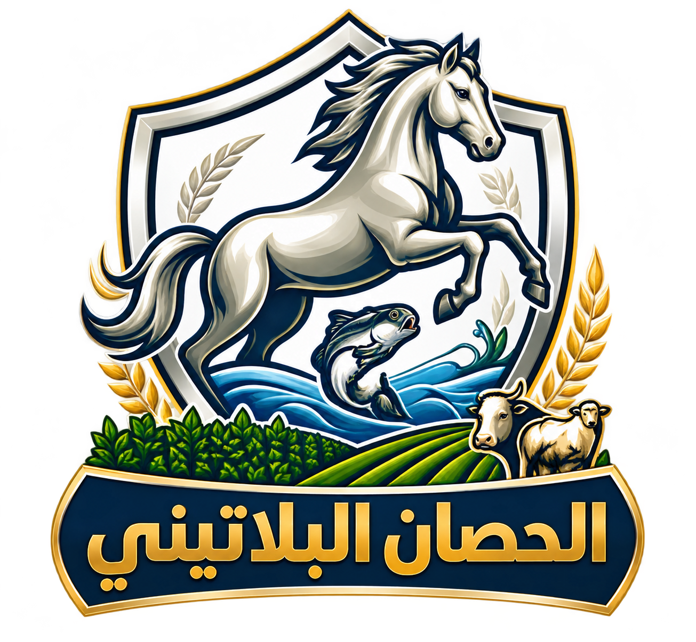
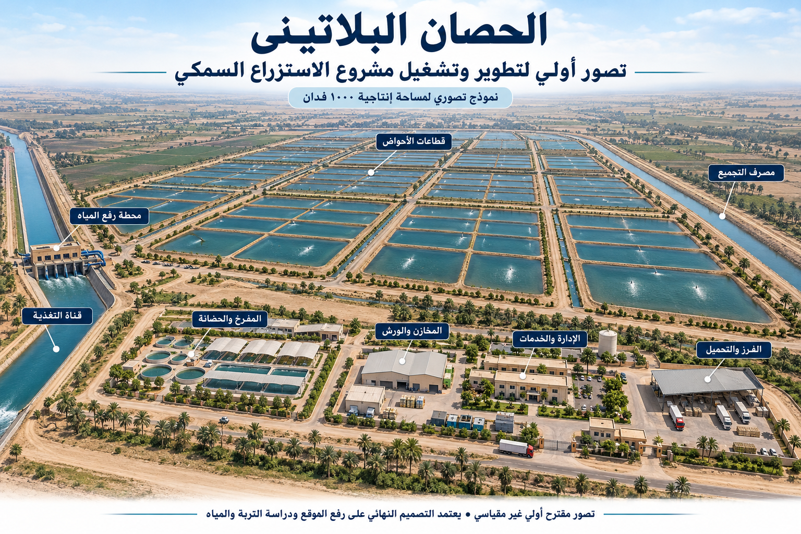

سهل الطينة — شرق بورسعيد
تشغيل وإدارة الأحواض ومتابعة الاستزراع والتغذية والنمو والحصاد خلال ٢٠٠٢–٢٠١٩. يذكر الملف توقف النشاط السمكي بالموقع في ٢٠١٩ لتغيير استخدام المنطقة.

الحصان البلاتينيللاستزراع السمكيالمقترح الرسمي ↙ثلاث مزارع. خطة تنفيذ مستقلة لكل موقع، وإدارة تجمع بيانات الأحواض والتكاليف والحصاد في رؤية واحدة.
اختر أحد المكونات لمعرفة وظيفته ومخرجات تجهيزه.

الأسماء والمساحات وفق بيانات الشركة؛ تعتمد الحدود والمواقع الدقيقة بمحاضر التسليم.
سيناريو حسابي أولي: صافي إنتاجي ٨٥٪، وإنتاجية ٦ أطنان للفدان الإنتاجي سنوياً. لا يمثل قياساً للموقع أو ضماناً للإنتاج.
يعتمد توزيع الأحواض ومناطق الخدمات بعد الرفع المساحي، وتقييم المياه والصرف، وحصر الأصول القائمة.
لم يحدد عدد القطاعات أو أحجام الأحواض في هذه المرحلة.
المدد استرشادية من التسليم واعتماد النطاق والتمويل؛ تختلف بحسب حالة كل موقع.
لوحة توضيحية ببيانات افتراضية. ليست متابعة حية أو نظاماً موصولاً بالمزارع.
حدود التنبيه وبرامج التغذية تعتمد فنياً لكل موقع. الألوان والقراءات هنا لأغراض شرح طريقة المتابعة فقط.
مياه وتغذية ونفوق واستثناءات تحتاج إجراء
مقارنة القطاعات ومراجعة النمو وخطة التشغيل
إنتاج وتكاليف ومخاطر ومخرجات ترفع للجهاز
نموذج تخطيطي سنوي عند الاستقرار. المدخلات الافتراضية ليست أسعار سوق معتمدة أو وعداً بالإنتاج.
المتبقي ليس ربحاً؛ لم تخصم الزريعة والعمالة والطاقة والصيانة والتجهيز وباقي التكاليف. إيراد الأسماك ليس بالضرورة مستحقات الشركة.
الإنتاج سنوي عند الاستقرار؛ المتوسط اليومي لا يعني حصاداً يومياً ثابتاً. كمية العلف مدخل مستقل يحتاج ربطاً فنياً بالنمو ومعامل التحويل. لا تخصم نسبة نفوق ثانية من الإنتاج الصافي المفترض.
بحسب ملف الشركة، تمتد الخبرات إلى تشغيل المزارع والمفرخات ورعاية الزريعة والتحضين ومتابعة التربية حتى الحصاد.
تشغيل وإدارة الأحواض ومتابعة الاستزراع والتغذية والنمو والحصاد خلال ٢٠٠٢–٢٠١٩. يذكر الملف توقف النشاط السمكي بالموقع في ٢٠١٩ لتغيير استخدام المنطقة.
تجهيز وتشغيل المزارع وإدارة الأحواض وبرامج التغذية ومتابعة الإنتاج والحصاد.
تشغيل الأحواض والاستزراع والرعاية والتغذية ومتابعة النمو والإنتاج.
تجهيز وتشغيل الأحواض وإدارة التربية والمتابعة الفنية والتغذية والدورة الإنتاجية حتى الحصاد.
الخبرات وفق إفادة الشركة. مجموع المساحات لا يعني ملكية المواقع أو التشغيل الحالي المتزامن؛ لا تعرض هذه البوابة صوراً توثيقية لسوابق الأعمال.